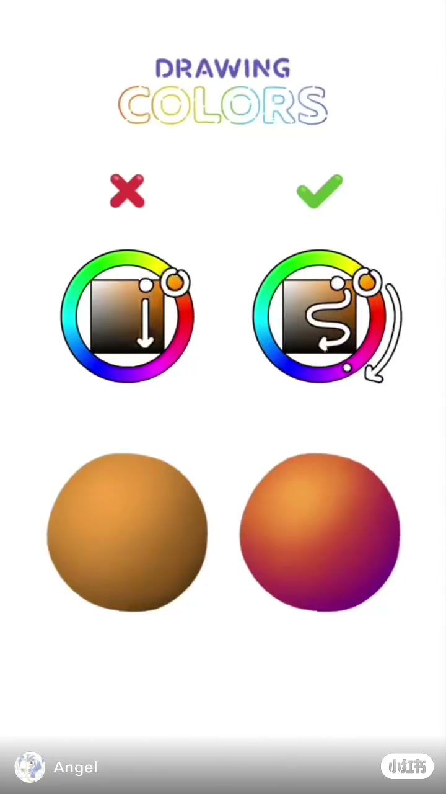
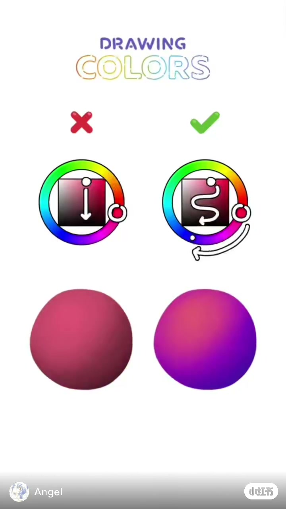
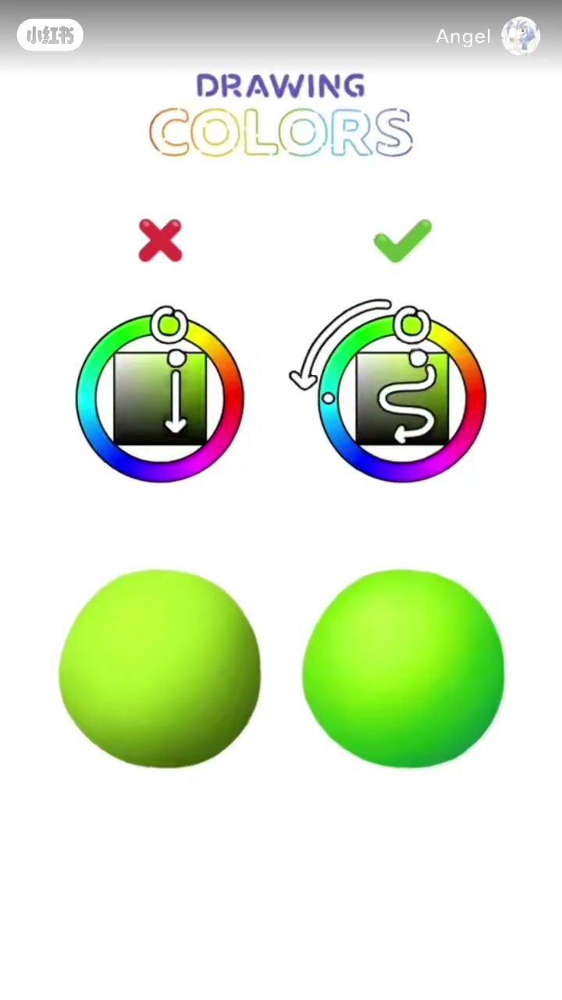

内容要点
这是一条视觉型短片。Whisper 只给出 1 段，而且对不上画面上的字，所以下面的要点全部来自抽帧和球体暗部的像素，不来自口播。
画面在比什么
左列红叉：色相钉住，方框里的箭头竖直向下，球体暗部发闷。右列绿勾：方框里走弯道，色环外还有一条弯箭头，球体暗部离开底色。
左侧暗部发褐，右侧暗部发紫。
左侧暗部是发闷的暗红，右侧暗部走到蓝紫。
左侧暗部偏橄榄，右侧暗部更青。片尾仍停在这一组。
画面把「只拉明度」标成红叉，把「明度弯道加上色相也动」标成绿勾。这是画面上的对错标记，不是对所有绘画的规定。视频没有说出适用边界。
00:00–00:02 橙黄：竖直向下的箭头，暗部发褐
口播极少。本地转录只有一句套话，画面上没有对应字幕，这一节按 1.0 秒的帧来写。
开场就是一张白底竖图。顶上英文标题 DRAWING COLORS，「DRAWING」较小，「COLORS」是空心彩虹描边。下面分成两列。左列头顶一个红叉，右列头顶一个绿勾。每列上方是常见的数字取色器：外圈色环，中间一个饱和度/明度方框；下方各有一颗受光的球体，高光在左上，暗部在右下。
这一秒色环停在橙色。左列方框里，白箭头从偏亮的橙笔直向下。球体从橙黄收到一块褐：在球体中轴偏下的暗部取样，大约是红 94、绿 64、蓝 26。右列方框里的白线不是直线，而是一条弯道；色环外侧另有一条弯箭头，表示取更暗的颜色时，色相也离开了橙色。右球暗部取样大约是红 116、绿 2、蓝 90，肉眼看是紫，不再是把橙色加黑。
弯箭头的转向在压缩画面里不能逐帧钉死，这里只记「色相离开了当前橙色」。作者没有开口解释为什么这样画。

00:02–00:05 粉红：红叉仍是暗红，绿勾走到蓝紫
大约 2.5 秒，底色从橙换成粉红，两列的标记没有换。左列色环钉在粉红，方框箭头仍然竖直向下。3.5 秒这一帧，左球暗部大约是红 84、绿 29、蓝 50，还是同一色相里更暗的红，看起来发闷。
右列仍然是方框弯道加色环外的弯箭头。右球暗部大约是红 88、绿 0、蓝 164，蓝比红高，已经离开粉红，落到蓝紫。高光一侧两边仍接近，差别主要在球体下沿。

00:05–00:08 黄绿：橄榄对更青，然后停住
大约 5.5 秒，底色再换成黄绿，一直放到 8.5 秒结束，没有第四种颜色，也没有新的字幕。7.0 秒这一帧，左球暗部大约是红 73、绿 106、蓝 17，黄绿被拉暗以后偏橄榄。右球暗部大约是红 32、绿 181、蓝 37，绿仍然高，蓝也起来了，看起来更青，而不是一块脏橄榄。
画面边缘能看见作者名 Angel 和小红书标志。标志靠上还是靠下，不同帧看起来不完全一样，这里不把它当成内容。片尾没有口播收束，对照停在黄绿这一组。

这条片子没有说出口的边界
三组球体都是同一套演示：白底、一颗球、左上受光。画面用红叉和绿勾表示取舍，但没有给出光源色温、环境色，也没有在真人皮肤或照片上试。把「暗部要偏紫或偏青」写成普遍规律，是从这三颗球推出来的，不是视频里的原话。调色软件里的色轮节点，这一条也没有出现。
转录里唯一一句是「请不吝点赞 订阅 转发 打赏支持明镜与点点栏目」。它盖住了几乎整段时长，画面上没有这些字，不作为讲解依据。